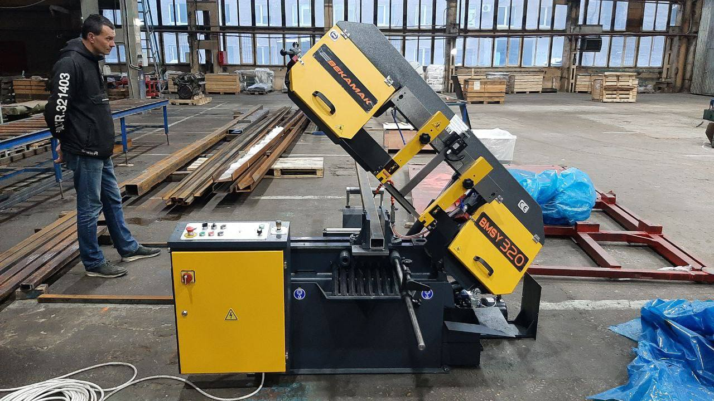
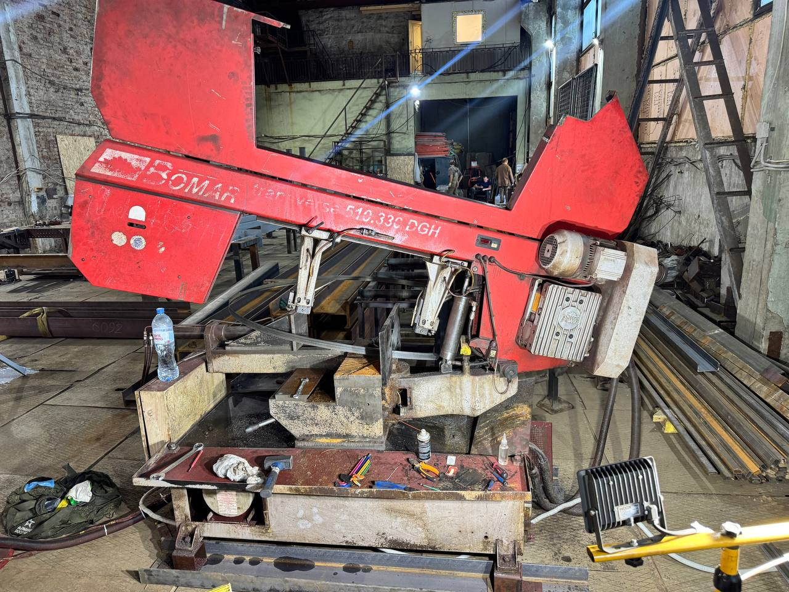
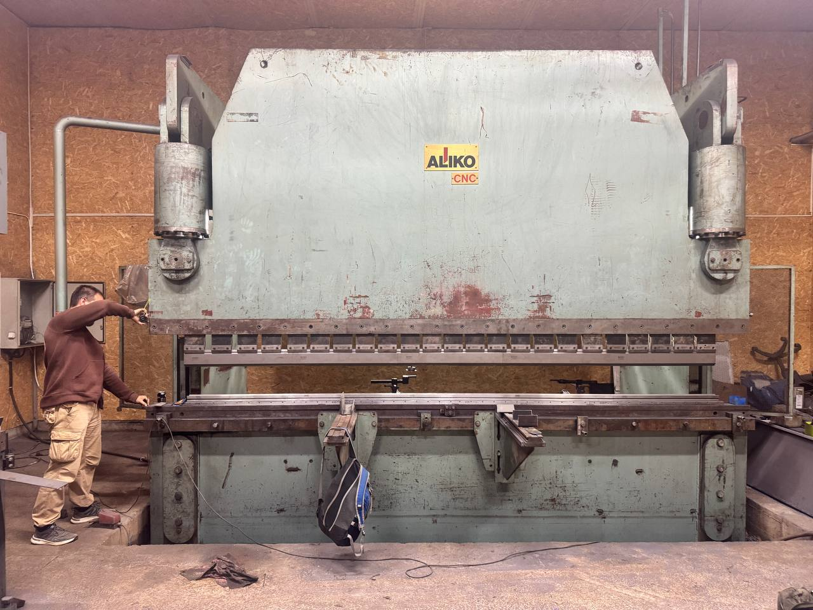

Почему именно перед зимой
Зимой цех остывает до 5-10°C (а в неотапливаемых помещениях — до 0°C и ниже). Это влияет на всё:
- Гидравлическое масло густеет. При 5°C его вязкость увеличивается на 30-40% по сравнению с летом. Помпа работает с перегрузкой, полотно медленнее опускается, рез ухудшается.
- Охлаждающая жидкость может замёрзнуть, если в ней мало антифриза. Обмерзание шлангов и форсунок — прямая дорога к перегреву полотна.
- Конденсат на металлических поверхностях вызывает коррозию. Направляющие, колёса, станина — всё ржавеет быстрее.
- Резиновые уплотнения теряют эластичность на морозе, начинают «подтекать».
Регулярное обслуживание перед зимой — это не «формальность», а инвестиция в бесперебойную работу в самый загруженный сезон (конец года, выполнение планов).

Как подготовить инструмент для обслуживания
Прежде чем приступать к чек-листу, подготовьте необходимый инструмент. Это сэкономит время и позволит выполнить все пункты качественно.
Базовый набор инструментов
- Динамометрический ключ — для затяжки болтов с контролем момента. Без него можно перетянуть (деформация детали) или недотянуть (ослабление вибрацией).
- Индикатор часового типа — для проверки биения колёс и направляющих. Точность — 0.01 мм. Без него невозможно определить износ.
- Тензометр — для точного измерения натяжения полотна. Замер «на глаз» или «пальцем» недостаточно точен.
- Мультиметр — для проверки электрических цепей, напряжения, сопротивления изоляции.
- Манометр — для проверки давления в гидросистеме. Паспортное значение — ориентир.
- Транспортир или угломер — для проверки угла гибки после настройки.
Расходные материалы
- Смазка рекомендованного типа (ИГП-18 или аналог)
- Очиститель контактов (Контакт-61 или спирт)
- Консервационная смазка (Литол-24) для неотапливаемых цехов
- Салфетки без ворса для протирки поверхностей
- Маркер для пометки деталей
Типичные поломки от отсутствия ТО
На основе нашего опыта — статистика обращений после пропущенного зимнего обслуживания:
| Поломка | Доля обращений | Средняя стоимость | Простой |
|---|---|---|---|
| Обрыв полотна | 35% | 12 000₽ | 2-3 дня |
| Перегрев помпы | 25% | 18 000₽ | 1-2 дня |
| Коррозия направляющих | 20% | 25 000₽ | 3-5 дней |
| Выход из строя электродвигателя | 15% | 45 000₽ | 5-7 дней |
| Общая сумма (средняя) | 100% | от 50 000₽ | 2-7 дней |
Сравнение: Стоимость комплексного зимнего ТО — от 12 000₽. Стоимость самого дешёвого ремонта после пропуска ТО — от 50 000₽. Экономия на обслуживании обходится в 4-10 раз дороже.
Чек-лист: 8 пунктов обязательного обслуживания
1. Проверка натяжения полотна
Как проверить: Нажмите на полотно пальцем в середине между колёсами. Отклонение — 10-15 мм. Или используйте тензометр — точнее.
Норма: 250-350 Н/мм² для полотен шириной 27-34 мм. Для полотен 41 мм — до 400 Н/мм².
Что будет, если проигнорировать:
- Недостаточное натяжение → полотно «ходит» змейкой → увод реза, перегрев полотна
- Избыточное натяжение → постоянная нагрузка на сварной шов → обрыв полотна
Рекомендация: Перед зимой замените полотно, если на нём есть трещины на зубьях или следы износа. Новое полотно + правильное натяжение = ровный рез на весь сезон.
2. Осмотр и смазка направляющих
Что проверять:
- Зазор между направляющей втулкой и полотном — не более 0.1 мм
- Состояние втулок — нет ли выработки, сколов
- Смазка — все маслёнки заполнены, подача масла работает
Как смазать: Используйте рекомендованное производителем масло (обычно ИГП-18 или аналог). Закачивайте через маслёнки до появления на кромке направляющей.
Зимний нюанс: При низких температурах масло густеет. Если маслёнки «не качают» — замените масло на более жидкое (с индексом вязкости 32 вместо 46).
3. Система охлаждения
Порядок действий:
- Слейте старую охлаждающую жидкость
- Промойте бак водой — удалите стружку и осадок
- Проверьте датчик уровня — должен работать
- Залейте свежую ОЖ с содержанием антифриза не менее 30% (для неотапливаемого цеха — 50%)
- Проверьте работу помпы — нажмите кнопку «Охлаждение», убедитесь, что жидкость поступает
- Осмотрите шланги — нет ли трещин, потёртостей
- Прочистите форсунки — они забиваются стружкой
Важно: Никогда не используйте чистую воду для охлаждения. Она вызывает коррозию и образует накипь. Только специальная ОЖ или водный раствор с ингибиторами.

4. Приводные и натяжные колёса
Что проверять:
- Состояние резинового покрытия на колёсах — нет ли отслоений, потёртостей
- Биение колёс — не более 0.05 мм (проверяется индикатором)
- Очистка от металлической пыли и стружки — щёткой и тряпкой
- Состояние щёток, очищающих колёса — изношены? Заменить
Реальный случай: Клиент из Тулы жаловался на «вибрацию» при резе. При осмотре обнаружили, что на приводном колесе налипла металлическая стружка — одна сторона колеса была тяжелее другой. Балансировка сбилась. Очистка + проверка биения — и вибрация исчезла. Стоимость работ: 4 000₽. А могло бы дойти до замены покрытия колеса — от 25 000₽.
5. Осмотр полотна
Контрольные точки:
- Зубья — нет ли сколов, трещин, «усталости» металла
- Сварной шов — самый уязвимый элемент. Осмотрите обе стороны
- Общее состояние — прямолинейность, отсутствие «волны»
Критерии замены:
- Более 3 сколотых зубьев подряд
- Трещина на сварном шве (даже микроскопическая)
- Зубья «поплыли» — потеряли геометрию
- Полотно не восстанавливается заточкой после 2-3 переточек
6. Гидравлическая система
Проверки:
- Уровень масла — между метками MIN и MAX
- Цвет масла — должно быть прозрачным, без помутнений
- Запах — горелое масло = перегрев системы
- Утечки — осмотрите все шланги, штуцеры, цилиндры
- Давление — проверьте манометром (норма для конкретной модели в паспорте)
Зимний совет: Замените гидравлическое масло перед зимой, если оно отработало более 1000 часов. Свежее масло с правильной вязкостью = стабильная работа гидравлики при низких температурах.

7. Электрика и привод
Что проверять:
- Контакты в клеммных коробках — нет ли окисления
- Состояние кабелей — нет ли повреждений изоляции
- Концевые выключатели — работают? Нажмите каждый вручную
- Ремень привода — натяжение, состояние (нет ли трещин, расслоений)
- Заземление станка — обязательно
Совет: Зимой влажность выше. Окисление контактов — частая причина «глюков». Профилактическая обработка контактов спецсредством (Контакт-61 или аналог) решает проблему на сезон.
8. Общая очистка и смазка
Порядок:
- Полностью очистите станок от стружки — внутренние полости, поддон, зону реза
- Протрите все металлические поверхности масляной тряпкой (предотвращение коррозии)
- Смазайте все точки смазки согласно схеме из паспорта
- Проверьте крепёжные болты — затяните ослабленные
- Нанесите консервационную смазку на открытые направляющие (если цех не отапливается)
Детально: почему зимой ленточная пила уязвима
Зимний период создаёт комплекс неблагоприятных факторов, которые усиливают износ ленточнопильного станка. Разберём каждый подробнее.
Влияние температуры на гидравлику
Гидравлическая система ленточной пилы отвечает за подачу полотна и управление скоростью реза. При понижении температуры до 5°C и ниже масло густеет — его динамическая вязкость увеличивается на 30-40%. Это приводит к следующим последствиям:
- Помпа работает с повышенной нагрузкой — ресурс подшипников помпы снижается
- Скорость подачи полотна становится нестабильной — рез получается неравномерным
- При температуре ниже 0°C масло может полностью загустеть — станок не запустится
- Пропорциональные клапаны работают с задержкой — нарушается автоматика
Решение: Используйте гидравлическое масло с индексом вязкости VG 32 для зимнего периода вместо VG 46. При температуре ниже -10°C рекомендуется установить подогреватель масла в гидробаке — стоимость от 8 000₽, но он спасает от простоев.
Коррозия и конденсат
Зимой разница температур между нагретым оборудованием и холодным воздухом цеха приводит к образованию конденсата на металлических поверхностях. Направляющие полотна, приводные колёза, станина — всё покрывается тонким слоем влаги. Если не принимать мер, за неделю на необработанных поверхностях появляется ржавчина.
Особенно страдают прецизионные поверхности — направляющие втулки. Даже микроскопическая коррозия нарушает зазор между полотном и направляющей, что приводит к уводу реза и перегреву полотна.
Профилактика: После каждого дня работы протирайте металлические поверхности масляной тряпкой. Раз в неделю наносите тонкий слой консервационной смазки (Литол-24 или аналог). В неотапливаемом цехе — рассмотрите установку обогревателя.
Резиновые уплотнения и шланги
На морозе резина теряет эластичность. Уплотнительные кольца в гидроцилиндрах начинают «дубеть», появляются микротрещины. Шланги высокого давления трескаются, особенно в местах изгиба. Одна утечка шланга под давлением 200+ бар — это не только потерянное масло, но и реальная травмоопасная ситуация.
Проверка: Осмотрите все шланги на предмет трещин, потёртостей, набухания. Проверьте уплотнения на гидроцилиндрах — если при работе видны подтёки, уплотнения нужно менять. Не ждите полного отказа — профилактическая замена уплотнений стоит от 3 000₽, а ремонт после обрыва шланга — от 25 000₽.
Расширенный чек-лист: дополнительные проверки
Помимо основных 8 пунктов, перед зимой рекомендуется выполнить дополнительные работы, которые многие игнорируют:
Проверка сварного аппарата полотен
Если вы самостоятельно варите полотна, перед зимой проверьте сварочный аппарат:
- Состояние контактов на электродах — зачистите окисление
- Калибровка силы тока — для полотна шириной 27 мм нужно 280-320 А, для 41 мм — 350-400 А
- Состояние зажимов — полотно не должно «болтаться»
Неисправный сварочный аппарат = обрывы полотна в эксплуатации. Один обрыв — это минимум 2 часа простоя + стоимость нового полотна (от 2 500₽ за метр).
Калибровка датчиков
Датчики натяжения полотна, положения стола, давления — все они могут «плыть» со временем. Зимой, при перепадах температуры, неточность усиливается. Проверьте показания датчиков по эталонным приборам. Если расхождение более 5% — cần калибровка или замена.
Проверка системы подачи смазки
Автоматическая система подачи смазки (на станках с ЧПУ) может забиться загустевшим маслом. Промойте систему, продуйте трубки компрессором. Убедитесь, что смазка поступает во все точки — проверьте визуально появляется ли масло на кромках направляющих.
Стоимость профилактического обслуживания
Для понимания экономической целесообразности — вот ориентировочные цены:
| Вид работ | Стоимость | Время |
|---|---|---|
| Диагностика (выезд) | 3 000₽ | 1-2 часа |
| Профилактическое ТО (8 пунктов) | от 5 000₽ | 3-4 часа |
| Замена полотна + настройка | от 8 000₽ | 1-2 часа |
| Замена масла + промывка | от 6 000₽ | 2-3 часа |
| Комплексное зимнее ТО | от 12 000₽ | 5-6 часов |
Сравнение: Комплексное ТО перед зимой — от 12 000₽. Аварийный ремонт после игнорирования ТО — от 50 000₽ до 150 000₽ + 2-5 дней простоя. Экономия на обслуживании обходится в 5-10 раз дороже.
Типичные ошибки при зимнем обслуживании
На основе нашего опыта — вот что делают неправильно чаще всего:
- Меняют масло, но не промывают систему. Старое масло оставляет отложения, которые забивают фильтры и клапаны. Промывка обязательна — это +2 000₽ к стоимости, но экономит от 15 000₽ на ремонт помпы.
- Не проверяют биение колёс. Визуально всё кажется нормальным, но индикатор показывает биение 0.15 мм при допуске 0.05 мм. Результат — вибрация, перегрев полотна, увод реза.
- Используют некондиционную охлаждающую жидкость. Экономия на ОЖ — прямая дорога к коррозии и накипи. Стоимость промывки системы от накипи — от 10 000₽.
- Не проверяют электрику. Окисленные контакты зимой — самая частая причина «необъяснимых» остановок. Профилактическая обработка контактов — 1 000₽, поиск «глюка» — от 5 000₽.
- Забывают про щётки колёс. Изношенные щётки не очищают колёса от стружки → дисбаланс → вибрация → обрыв полотна.
Часто задаваемые вопросы (FAQ)
Сроки и последовательность работ
Рекомендуемый порядок зимнего обслуживания:
- День 1: Диагностика — визуальный осмотр, проверка всех узлов, составление дефектоведа
- День 1-2: Замена расходников — полотно, масло, фильтры, уплотнения (по результатам диагностики)
- День 2: Ремонтные работы — замена изношенных деталей, восстановление поверхностей
- День 3: Настройка и тестирование — проверка натяжения, биения, тестовые резы
При необходимости все работы можно выполнить за 1-2 дня, если запчасти есть на складе. Рекомендуем начинать подготовку к зиме за 2 недели до предполагаемого понижения температуры.
Последствия пропущенного обслуживания
Из нашего опита — вот что бывает, когда чек-лист игнорируют:
- Полотно уводит на 3-5° → неровный рез → брак заготовок → переделка
- Обрыв полотна → травмоопасная ситуация + остановка на 2-3 дня (ожидание нового полотна)
- Перегрев помпы → замена помпы + промывка системы = 15 000₽ и 2 дня простоя
- Коррозия направляющих → проточка или замена = от 20 000₽
- Выход из строя электродвигателя → замена = от 35 000₽ + время
Когда нужна помощь специалиста
Чек-лист выше — для оператора. Но некоторые пункты требуют квалификации:
- Проверка биения колёс (нужен индикатор и навык)
- Диагностика гидравлической системы (нужен манометр, анализ масла)
- Замена покрытия приводного колеса
- Ремонт электрики (особенно если есть «глюки»)
Если хотя бы один пункт вызывает сомнения — лучше вызвать мастера. Стоимость профилактического обслуживания — от 5 000₽. Стоимость ремонта после «самообслуживания» — в 5-10 раз дороже.
Заключение
Обслуживание ленточной пилы перед зимой — это инвестиция в бесперебойную работу в самый загруженный сезон. Один час профилактики экономит дни простоя и десятки тысяч рублей на ремонте. Следуйте чек-листу, ведите журнал обслуживания, и ваша пила отработает весь сезон без сюрпризов.
Главное правило: не откладывайте ТО «на потом». Зима наступит быстро, а поломка в разгар сезона — это потерянные заказы, недовольные клиенты и значительные затраты на аварийный ремонт. Лучше потратить 12 000₽ на профилактику сейчас, чем 100 000₽ на ремонт в январе.
Заказать обслуживание ленточной пилы
Проведём полное обслуживание вашего ленточнопильного станка — от диагностики до замены расходников. Выезд по Москве и МО!
Позвонить: 8 (993) 908-98-37Или напишите в WhatsApp — ответим за 15 минут
Читайте также: Ремонт ленточных пил — услуги | Ремонт гильотины — реальные цены